AI security, framed around Australian breaches.
Eight modules, each named for a recent Australian cyber incident. The lab shows how an AI agent built on the same pipeline would make the same failure easier to repeat, and which control stops it. Runs with one command, no API key and no cloud account.
Modules
Each attack module has a Secured and a Vulnerable mode. Vulnerable switches off only the controls that module is about, so you can see which control carries the weight. Module 8 is analytical: it applies MAESTRO to the lab's architecture.
1. Over-privileged service account
Optus pattern (2022). An agent inherits its service account's permissions.
LAYERS 2&32. Wide tool and no egress wall
Medibank pattern (2022). A SQL tool + an unlimited egress is a credential away from bulk exfil.
SUPPLY CHAIN3. Tampered third-party skill
Latitude pattern (2023). A skill, reviewed once, can be swapped at any time.
INFORMATION4. Record oversharing
MediSecure pattern (2024). Context minimisation is a security control, not a performance one.
ACTIONS5. Destructive action with no HITL
DP World pattern (2023). Irreversible actions must be bound to one approved call.
HITL BOUNDARY6. The misleading approval card
Qantas pattern (2025). A human can only consent to what they are shown.
CAPSTONE7. The full retail incident
A fictional 2026 Australian retailer scenario. Every attack at once.
ANALYTICAL8. MAESTRO threat model
Apply the MAESTRO framework to the lab's own architecture.
Architecture
Every tool call from the AI agent passes through one gateway. Its checks are grouped by the lecture's three layers: information, instructions, actions, with identity and audit as cross-cutting services.

MAESTRO as the second lens
The three-layer lecture framework is the designer's lens. MAESTRO is the reviewer's lens: it asks whether you have covered every layer of the system. Module 8 is an analytical module that applies MAESTRO to the lab's own architecture.
| Layer | Scope | Lab modules |
|---|---|---|
| L1 Foundation Models | The underlying LLM | 1, 2, 4 |
| L2 Data Operations | Retrieval, context assembly, embeddings | 2, 4 |
| L3 Agent Frameworks | Tool definitions, orchestration | 2, 5 |
| L4 Deployment Infrastructure | Workload identity, network, secrets | 1, 2 |
| L5 Evaluation and Observability | Red teaming, audit | CI matrix |
| L6 Security and Compliance | HITL, policy enforcement | 5, 6 |
| L7 Agent Ecosystem | Skills, MCP, integrations | 3 |
Run it
You need Python 3.11 or newer and Git. The only network use is the first pip install.
git clone https://github.com/Adolfiro17/australian-ai-breach-lab.git
cd australian-ai-breach-lab
./start.sh # Windows: .\start.ps1| Command | What it does |
|---|---|
./start.sh | Open the lab in the browser at http://localhost:8501 |
./start.sh matrix | Run every attack in both modes |
./start.sh run 3 --mode vulnerable | Run one module in the terminal |
./start.sh run 2 --disable trust_label,narrow_tool | Choose exactly which controls are off |
./start.sh maestro | Print the MAESTRO threat model report |
./start.sh test | Run the test suite |
About
Built by Adolf Sey. All companies, hosts, people, prescriptions and secrets are fictional. The vulnerable mode is vulnerable on purpose: do not deploy it, and never point these techniques at systems you do not own.
This repository is not a report of any real Australian breach. See the attribution notes and the companion Secure Agentic SOC Lab for the HITL work.